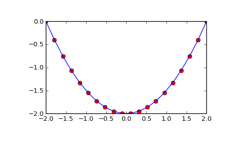

scipy.integrate.cumtrapz¶
- scipy.integrate.cumtrapz(y, x=None, dx=1.0, axis=-1, initial=None)[source]¶
Cumulatively integrate y(x) using the composite trapezoidal rule.
Parameters : y : array_like
Values to integrate.
x : array_like, optional
The coordinate to integrate along. If None (default), use spacing dx between consecutive elements in y.
dx : int, optional
Spacing between elements of y. Only used if x is None.
axis : int, optional
Specifies the axis to cumulate. Default is -1 (last axis).
initial : scalar, optional
If given, uses this value as the first value in the returned result. Typically this value should be 0. Default is None, which means no value at x[0] is returned and res has one element less than y along the axis of integration.
Returns : res : ndarray
The result of cumulative integration of y along axis. If initial is None, the shape is such that the axis of integration has one less value than y. If initial is given, the shape is equal to that of y.
See also
- quad
- adaptive quadrature using QUADPACK
- romberg
- adaptive Romberg quadrature
- quadrature
- adaptive Gaussian quadrature
- fixed_quad
- fixed-order Gaussian quadrature
- dblquad
- double integrals
- tplquad
- triple integrals
- romb
- integrators for sampled data
- ode
- ODE integrators
- odeint
- ODE integrators
Examples
>>> from scipy import integrate >>> import matplotlib.pyplot as plt
>>> x = np.linspace(-2, 2, num=20) >>> y = x >>> y_int = integrate.cumtrapz(y, x, initial=0) >>> plt.plot(x, y_int, 'ro', x, y[0] + 0.5 * x**2, 'b-') >>> plt.show()
